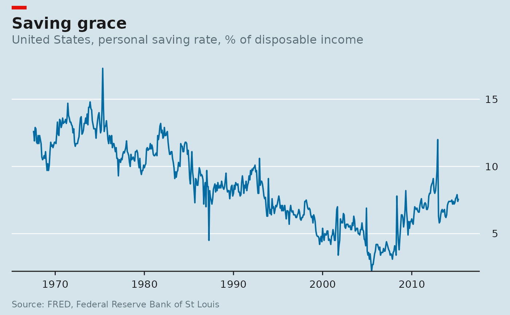

The Economist prefixes every chart with a small red rectangle at the top
left, above the title. That block is not a plot layer – it sits outside the
plotting area entirely – so it cannot be added with +. This function
converts the plot to a grob table and inserts the block as a new row aligned
with the title.
Arguments
- plot
A ggplot object, or a gtable from a previous
ggplot2::ggplotGrob()call.- colour
Block colour. Defaults to the Economist red.
- width, height
Block dimensions, as
grid::unit()objects.- gap
Space between the block and whatever is below it.
Details
The result is a grid object, not a ggplot, so it is the last thing you add.
It prints normally and ggplot2::ggsave() accepts it, but you cannot add
further ggplot layers to it afterwards.
Examples
library(ggplot2)
p <- ggplot(economics, aes(date, psavert)) +
geom_line(colour = econ_colours("blue"), linewidth = 0.7) +
scale_y_econ() +
labs_econ(
title = "Saving grace",
subtitle = "United States, personal saving rate, % of disposable income",
source = "FRED, Federal Reserve Bank of St Louis"
) +
theme_econ()
econ_masthead(p)
